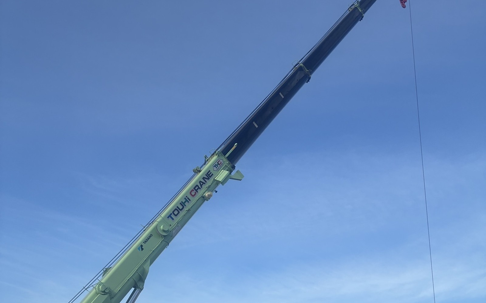
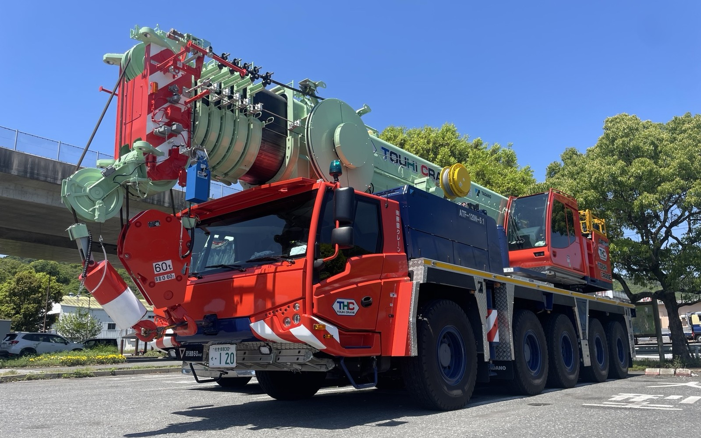
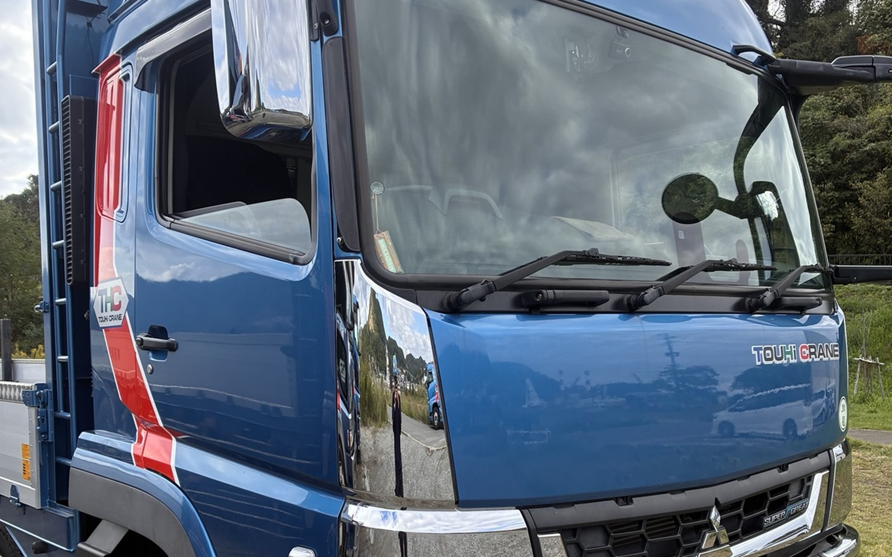

NAGASAKI / CRANE SERVICE
13tから400tまで。長崎の現場を支える東彼クレーン。
13tラフタークレーンから400tオールテレーンまで幅広く対応。

13tから

400tまで

運搬にも対応
長崎のさまざまな現場で、クレーン作業・運送・一般建設業を行っています。
入社後に免許取得可能。クレーンオペレーター、トラック・トレーラー運転手などを募集しています。
地域に根ざし、安全・確実な作業で信頼される企業を目指します。
クレーン作業・運送・一般建設業に関するご相談、お見積もりなど、お気軽にご連絡ください。
Instagramなどで、日々の作業や現場の様子を発信していきます。